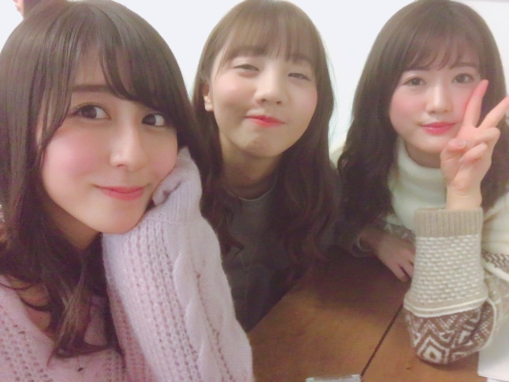
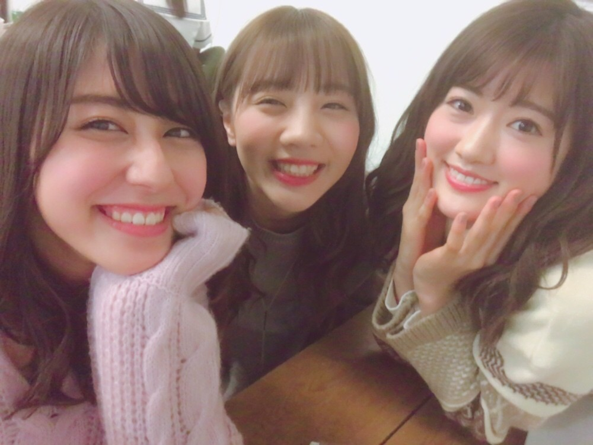

| 2017/02 02 Thu | 斎藤ちはる ツインテールの日らしい。 |
ちはるーむへようこそ
2/2は、ツインテールの日なんですね☺︎
お見苦しいですが、ツインしました。
一気に幼くなるな〜(> <)笑
ツインテールは恥ずかしいけど...
たまにはね◎
----------------------------------------♡
#chihashot
シャッタースピードを1番早くして
水の流れを切り取った一枚。
水ってこんな風になってるんだ〜と
改めて観察、感動できる！
青っぽい雰囲気が大好き。
逆にシャッタースピードを遅くして
光を操った写真。
1/4にしたから、4秒間で
ゆっくりカメラを♡型に動かして
自分で♡にしたんだ！
これだけ色んな光があると
楽しいねー◎
この写真私凄い好き。
見てるだけで幸せな気持ちになれる。
ここでクイズ！！！
この2枚目の光の♡の写真は、
どこで撮ったでしょうか✩？
＊ヒント
チームDが大好きなあの場所の、
あの幻想的な場所。
----------------------------------------♡
♬ ChihaMusic
「ムーンソング」【Alexandros】さん
優しくて高い声が曲の
透き通る雰囲気を存分に醸し出していて
本当素敵な声だなー
英語と日本語の歌詞のクロスも
聞いていて心地いい。
"光の無いこの世界で
僕はどれくらい見えるの？
次が浮かんだその場所へ
ツキを頼らずに向かおう"
この歌詞が凄い好き。
前へ進む勇気が湧く。

安定の愛未とちま。

なかよし☺︎☺︎
にんまり☺︎☺︎
おやすみ
斎藤ちはる